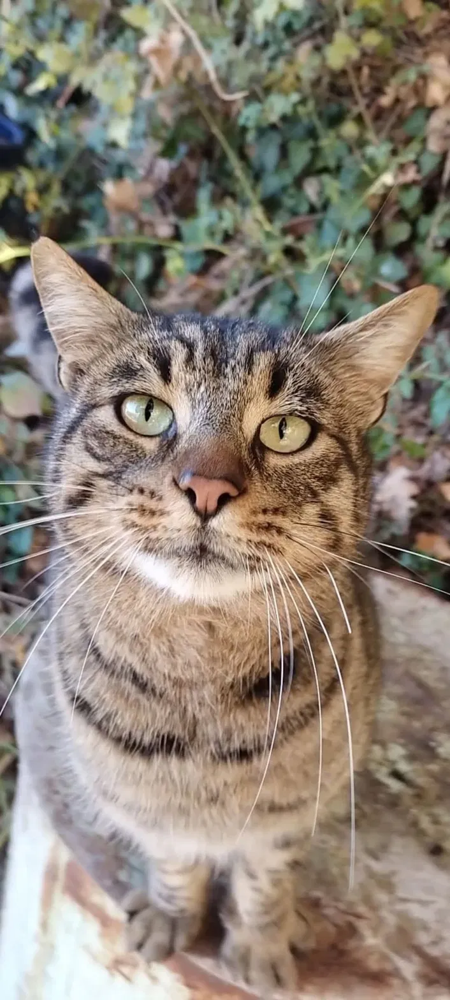
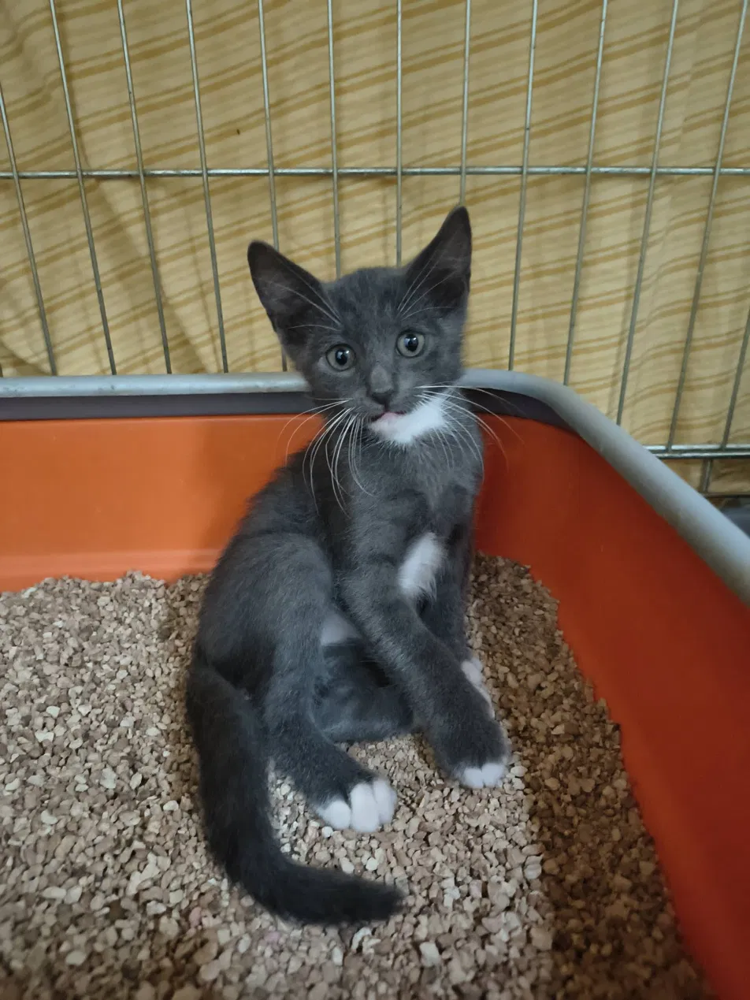
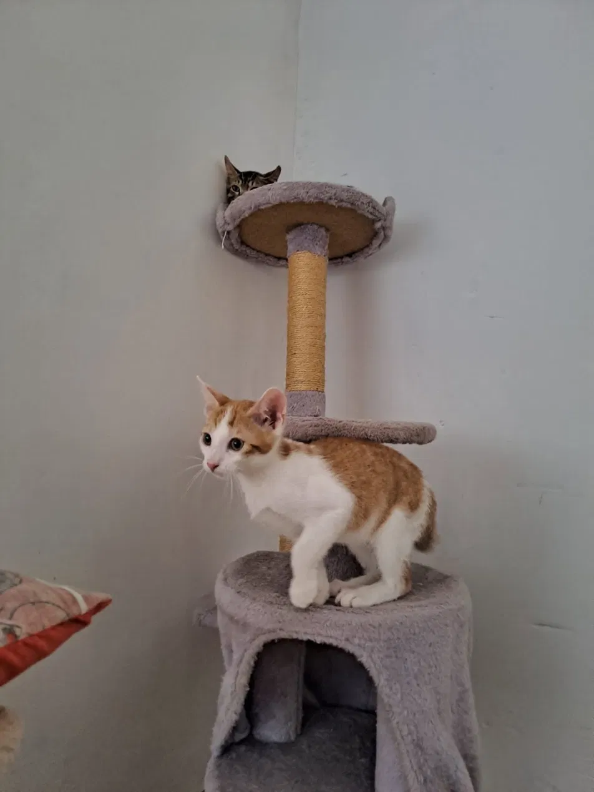
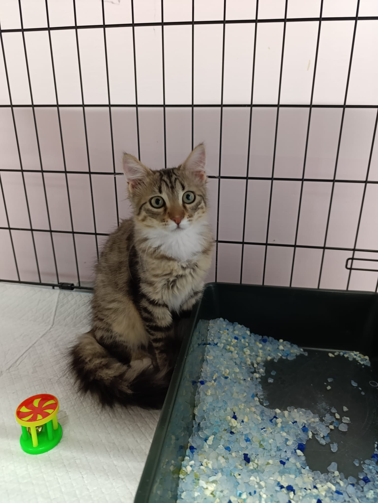
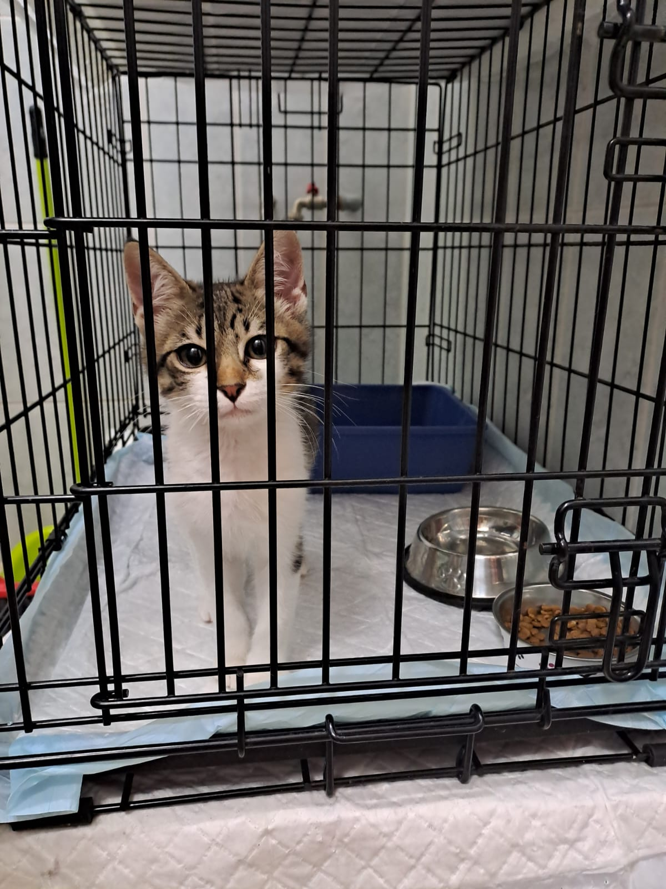
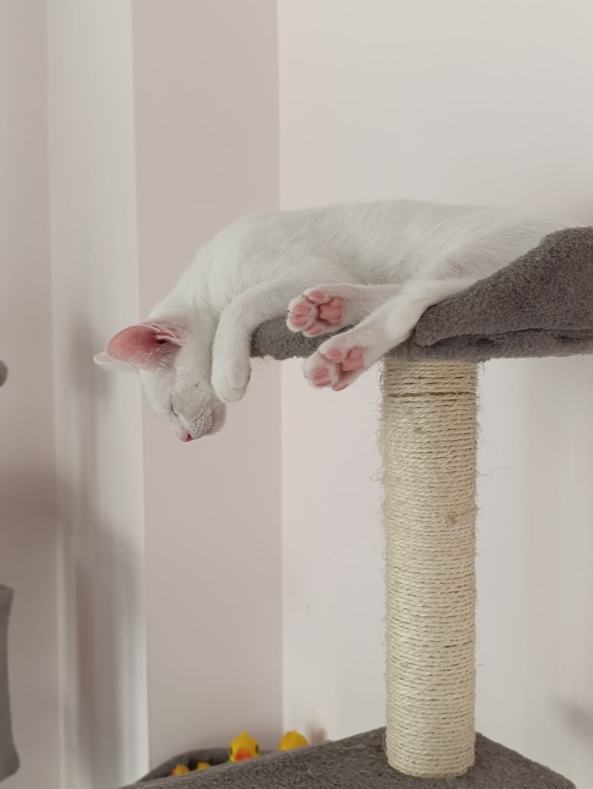
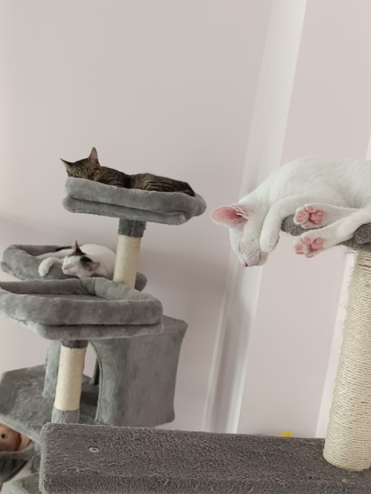

Ogni baffo merita cure,
ogni coda merita casa.
Vibrisse & Codine è un'Organizzazione di Volontariato nata a Cava de' Tirreni dall'amore per i gatti, animali spesso lasciati senza le stesse tutele previste per i cani. Ci occupiamo di sterilizzazione, cura quotidiana delle colonie feline e adozioni responsabili.

dal 2023

Nata dalla sensibilità e dall'amore per i gatti
Vibrisse & Codine nasce dalla sensibilità e dall'amore per gli animali, in particolare per i gatti, non sempre sufficientemente tutelati dalla normativa vigente rispetto ad altri animali d'affezione. Da qui la scelta di dedicare tempo, energie e cuore alla sterilizzazione e alla cura dei gatti che vivono per strada a Cava de' Tirreni.
Nel 2023 l'associazione è stata formalmente riconosciuta come ODV — Organizzazione di Volontariato, un traguardo festeggiato insieme alla città e ai tanti volontari che ogni giorno si prendono cura delle colonie feline del territorio.
Cosa facciamo, ogni giorno
Dalla strada alla casa: quattro modi in cui l'associazione lavora per il benessere dei gatti di Cava de' Tirreni.
Sterilizzazione
Il cuore della nostra attività: preveniamo il randagismo e tuteliamo la salute dei gatti attraverso campagne di sterilizzazione costanti.
Cura delle colonie
Sfamiamo, curiamo e monitoriamo quotidianamente le colonie feline del territorio, intervenendo in caso di malattia o pericolo.
Adozioni responsabili
Troviamo famiglie adatte ai nostri gatti attraverso adozioni gratuite, precedute da un controllo dell'abitazione ospitante e da documenti scritti.
Lotterie di beneficenza
Organizziamo lotterie con montepremi per raccogliere fondi da destinare alle cure veterinarie e alle sterilizzazioni.
Adottare un gatto, con serietà
Le nostre adozioni sono sempre gratuite, ma seguono un percorso pensato per garantire il benessere del gatto per tutta la vita.
Conosciamoci
Ci racconti la tua casa e le tue abitudini attraverso i nostri canali social o via email.
Controllo dell'abitazione
I volontari effettuano una verifica dell'ambiente che accoglierà il gatto, a tutela del suo benessere.
Documenti scritti
L'adozione viene formalizzata con un documento scritto che tutela sia il gatto sia la famiglia adottante.
Casa, per sempre
Restiamo a disposizione anche dopo l'adozione, per qualsiasi dubbio o necessità.

I nostri baffi, di casa e di strada
Alcuni dei gatti seguiti dai volontari di Vibrisse & Codine. Scorri per conoscerli tutti.




Ogni contributo cura un gatto in più
Le sterilizzazioni, le cure veterinarie e il cibo per le colonie feline hanno un costo che sosteniamo grazie alle donazioni e alle nostre lotterie di beneficenza con montepremi. Puoi aiutarci con una donazione libera tramite bonifico o PayPal.
Scrivici per le lotterie in corsoBonifico — IBAN
IT38P0366701600010570213596
PayPal
vibrissecodine@gmail.com

Vieni a trovarci, o scrivici
Siamo aperti ogni giorno, in due fasce orarie. Trovi i nostri volontari anche sui social.
Indirizzo
Via Onofrio di Giordano 53, Cava de' Tirreni (SA)
Orari
Ogni giorno, 11:00–12:30 e 18:00–19:30